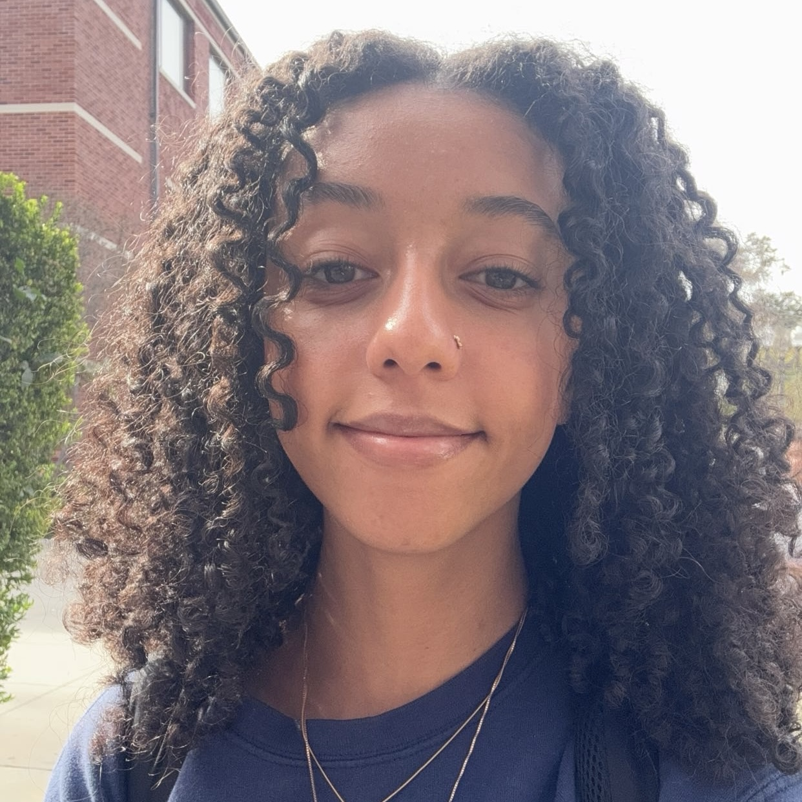

University of Southern California
Aug 2023 - May 2026
Bachelor of Science in Computer Science and Business Administration
Minor in Designing for Digital Experiences

Maia Weingard
2688 1/4 Orchard Ave., Los Angeles, California 90007
maiawein@usc.edu
(602) 391-0727
LinkedIn Portfolio
maiawein@usc.edu
(602) 391-0727
LinkedIn Portfolio
Education
Experience
Consumer Insights and Market Intelligence Extern
Beats by Dre, Los Angeles, California Sept 2024 - Oct 2024
Conducted consumer trends research, focusing on audio industry and Gen Z behaviors, identifying driving factors.
Executed end-to-end consumer research through A/B testing; from scoping to data analysis and participant engagement.
Developed interpersonal skills public speaking prowess, effectively presenting findings to live remote audiences.
Marketing Intern
Mind4Youth, San Jose, California Jul 2024 - Aug 2024
Assisted in the creation and execution of marketing campaigns, including social media, email marketing, and
advertising, to promote the organization's mission and services.
Conducted market research to identify target audiences while creating engaging content for social media platforms.
Managed tasks, such as social media marketing and promotion campaigns independently, demonstrating proficiency in
Canva, while supporting mental health and wellness initiatives.
Co-President
The Collective Identity, Los Angeles, California Apr 2024 - Present
Co-lead the organization to align with its mission, facilitating executive meetings for strategy, events, and
initiatives, while developing and implementing organizational policies and procedures.
Plan and execute community events, confabs, and excursions to support and empower Black women, working closely
with the founder to gather member feedback for informed decision-making.
Represent the organization at external events and conferences, collaborating with E-Board members to develop
engaging and informative curriculum for confabs, and designing promotional materials and campaigns to
increase visibility and participation.
Software Engineer
Emotion House USC, Los Angeles, California Feb 2024 - Aug 2024
Collaborated on the design and development of a Raspberry Pi-based phone prototype for message recording and
playback in a photo booth installation.
Led the integration of Raspberry Pi hardware and development of the message recording module, optimizing for
performance and functionality.
Participated in testing and debugging to ensure software reliability and identify improvement areas.
Graphic Designer
Woodlums USC, Los Angeles, California Sept 2023 - Present
Create 1 - 3 flyers and posts per week for upcoming events and excursions, uploading them to social media
platforms like Instagram and Linktree, and managing active engagement.
Collaborate with E-Board members to ensure designs met club objectives, using platforms such as Canva, Adobe
Photoshop, Adobe Illustrator, Adobe Fresco, and Google Workspace for creating designs.
Effectively communicate with teams to resolve feedback and maintain positive interactions as lead logo and
merchandise designer.
Website Developer and Designer
The Front Porch Coffee and Ice Cream Shoppe, Cozad, Nebraska Jun 2023 - Aug 2023
Developed a fully functional website for a coffee shop using HubSpot's features and tools, successfully
integrating the Square POS system for seamless transaction functionalities.
Leveraged business planning, marketing skills, and UX principles to create a user-centric, responsive website that
catered to the target audience's preferences, enhancing usability, accessibility, and compatibility across devices.
Collaborated with designers, clients, and cross-functional teams to align with project goals, managed and
optimized website content for branding and marketing strategies, and employed analytical skills to resolve
technical issues and ensure smooth functionality.
Beats by Dre, Los Angeles, California Sept 2024 - Oct 2024
Marketing Intern
Mind4Youth, San Jose, California Jul 2024 - Aug 2024
Co-President
The Collective Identity, Los Angeles, California Apr 2024 - Present
Software Engineer
Emotion House USC, Los Angeles, California Feb 2024 - Aug 2024
Graphic Designer
Woodlums USC, Los Angeles, California Sept 2023 - Present
Website Developer and Designer
The Front Porch Coffee and Ice Cream Shoppe, Cozad, Nebraska Jun 2023 - Aug 2023

Skills
Marketing:
Content Marketing, Data Analytics, Digital Marketing, Email Marketing, HubSpot, Market Research, Online Advertising, Search Engine Optimization (SEO), Social Media Marketing and Management
Design: Adobe Creative Suite, Canva, Figma, Final Cut Pro, Graphic Design, iMovie, Photography, User Experience (UX), Videography
Programming Languages: C++, HTML/CSS, Java, Javascript, SQL
Other: Docker, Eclipse, Git, Github, Google Workspace, Microsoft Office, Visual Studio Code
Design: Adobe Creative Suite, Canva, Figma, Final Cut Pro, Graphic Design, iMovie, Photography, User Experience (UX), Videography
Programming Languages: C++, HTML/CSS, Java, Javascript, SQL
Other: Docker, Eclipse, Git, Github, Google Workspace, Microsoft Office, Visual Studio Code